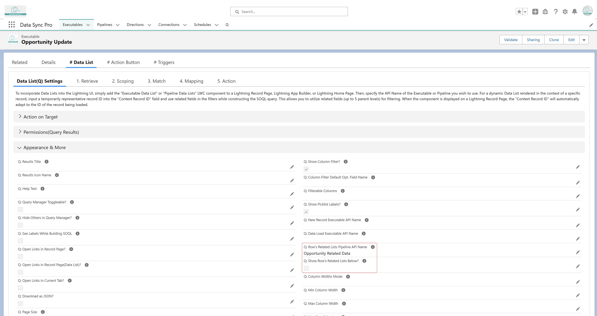
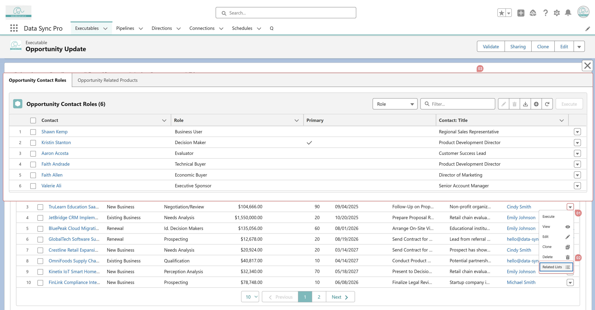

To display related lists for each row in a Data List,
follow these steps:
-
Create a Pipeline that contains one or more
Data Lists configured with dynamic filters
based on a context record ID.

-
In the parent Data List Executable, set the field
"Q: Row's Related Lists Pipeline API Name" to the
API Name of the Pipeline created in Step 1.

-
Once configured, a standard "Related Lists" row action
will automatically appear for each row. Clicking this action will display
the related lists defined in the Pipeline.

-
By default, related lists open in a modal popup, but you
can set "Q: Show Row's Related Lists Below?" to
TRUE to display them inline, directly beneath the main
Data List.